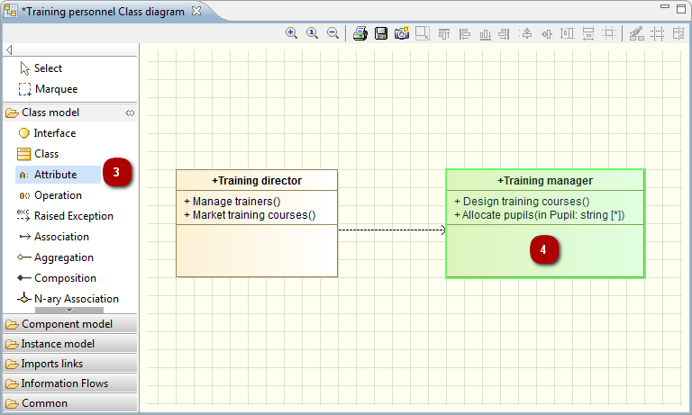

In Modelio diagrams, elements are created using the icons in the palette on the left of the diagram.
All Modelio diagrams include the model expert feature, which provides real-time assistance when you are creating elements in diagrams.
Examples:
If you try to create an unauthorized element (in this example, if you try to create a package (1) inside a class), the model expert highlights the concerned element in red (2), indicating that the creation operation you are attempting is not allowed.

If you try to create an authorized element (in this example, if you try to create an attribute (3) inside a class), the model expert highlights the concerned element in green (4), indicating that the creation operation you are attempting is allowed.